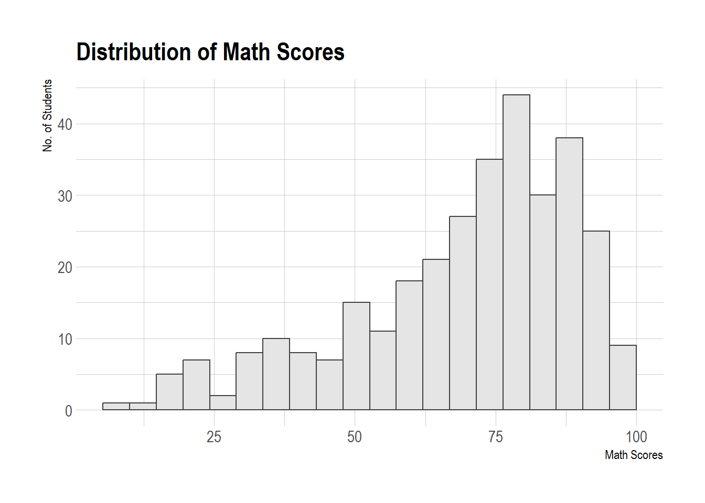
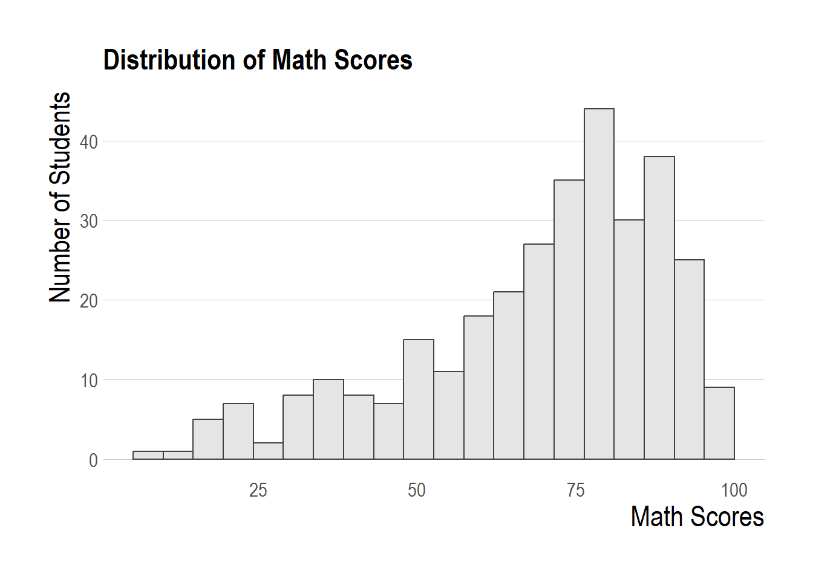

Hands on Exercise 2
Load and Install R Packages
code block
pacman::p_load(ggrepel, patchwork,
ggthemes, hrbrthemes, extrafont, InraeThemes,
ggpubr, tidyverse) Importing the data
code block
exam_data <- read_csv("data/Exam_data.csv")Overview of the data
code block
summary(exam_data) ID CLASS GENDER RACE
Length:322 Length:322 Length:322 Length:322
Class :character Class :character Class :character Class :character
Mode :character Mode :character Mode :character Mode :character
ENGLISH MATHS SCIENCE
Min. :21.00 Min. : 9.00 Min. :15.00
1st Qu.:59.00 1st Qu.:58.00 1st Qu.:49.25
Median :70.00 Median :74.00 Median :65.00
Mean :67.18 Mean :69.33 Mean :61.16
3rd Qu.:78.00 3rd Qu.:85.00 3rd Qu.:74.75
Max. :96.00 Max. :99.00 Max. :96.00 Plotting Practice
1: Annotations with ggrepel
A comparison between annotations using geom_label(), geom_text() and package ggrepel
code block
ggplot(data=exam_data,
aes(x= MATHS,
y=ENGLISH)) +
geom_point() +
geom_smooth(method=lm,
linewidth=0.5,
formula= y~x) +
geom_label_repel(aes(label = ID),
fontface = "bold") +
coord_cartesian(xlim=c(0,100),
ylim=c(0,100)) +
labs(x="Math", y="English",
title="Comparing English and Math Scores for Primary 3",
subtitle="There is a positive correlation between Math and English scores") +
theme_stata() +
theme(plot.background=element_rect(fill="#F8F3E6",colour="#F8F3E6"))
code block
ggplot(data=exam_data,
aes(x= MATHS,
y=ENGLISH)) +
geom_point() +
geom_smooth(method=lm,
linewidth=0.5,
formula= y~x) +
geom_label(aes(label = ID),
fontface = "bold") +
coord_cartesian(xlim=c(0,100),
ylim=c(0,100)) +
labs(x="Math", y="English",
title="Comparing English and Math Scores for Primary 3",
subtitle="There are too many labels to view the scatterplot well") +
theme_stata() +
theme(plot.background=element_rect(fill="#F8F3E6",colour="#F8F3E6"))
2: Trying out hbrthemes
theme_ipsum_rc()

code block
ggplot(data=exam_data,
aes(x = MATHS)) +
geom_histogram(bins=20,
boundary = 100,
color="#64605f",
fill="grey90") +
labs(x="Math Scores", y="count",
title="Distribution of Maths scores") +
theme_ipsum_rc()3: Trying out InraeThemes

code block
ggplot(data=exam_data,
aes(x = ENGLISH)) +
geom_histogram(bins=20,
boundary = 100,
color="#F8F3E6",
fill="#275662") +
labs(x="English Scores", y="count",
title="Distribution of English scores") +
theme_inrae()4: Customising hbrthemes
Changing font sizes for increased clarity
- axis_title_size argument is used to increase the font size of the axis title
- base_size argument is used to increase the default axis label
- grid argument is used to remove the x-axis grid lines
code block
ggplot(data=exam_data,
aes(x = SCIENCE)) +
geom_histogram(bins=20,
boundary = 100,
color="grey25",
fill="grey90") +
labs(title="Distribution of Science scores") +
theme_ipsum(axis_title_size = 17,
base_size = 13,
grid = "Y")
5: Grid Layout for Multiple Graphs
Creating Plots
Assign each plot to a variable in order to access it for patchworking
code block
p1 <- ggplot(data=exam_data,
aes(x = MATHS)) +
geom_histogram(bins=20,
boundary = 100,
color="#F8F3E6",
fill="#4d5887") +
labs(x="Math Scores", y="Student Count",
title="Distribution of Maths scores")code block
p2 <- ggplot(data=exam_data,
aes(x = ENGLISH)) +
geom_histogram(bins=20,
boundary = 100,
color="#F8F3E6",
fill="#4d5887") +
labs(x="Math Scores", y="Student Count",
title="Distribution of English scores")code block
p3 <- ggplot(data=exam_data,
aes(x= MATHS,
y=ENGLISH)) +
geom_point() +
geom_smooth(method=lm,
linewidth=0.5,
formula= y~x) +
coord_cartesian(xlim=c(0,100),
ylim=c(0,100)) +
labs(x="Math Scores", y="English Scores",
title="Correlation of English and Math Scores") +
stat_cor(label.x.npc = "left", label.y.npc = "top",
aes(label=paste(after_stat(rr.label))))Patching Plots Together
2 by 2
code block
p1 + p2
code block
p1 / p2Grid of 3 with tags
code block
((p1 / p2) | p3) +
plot_annotation(tag_levels = 'I')
code block
patchplot <- ((p1 / p2) | p3) +
plot_annotation(tag_levels = 'I')
patchplot & theme_stata() +
theme(plot.background=element_rect(fill="#F8F3E6",colour="#F8F3E6"))
Inset Plots
code block
p3 + inset_element(p2,
left = 0.02,
bottom = 0.7,
right = 0.5,
top = 1)